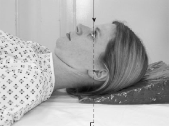

Skull(Fronto-Occipital)
Centering point:Glabella

Cassette Size:24 x 30cm (10 x 12ins) Potrait
Exposure Factors:70kVp on 16MaS
FFD:100cm
Pathologies:#(Fracture), Trauma, FB(Foreign body), Intracranial fluid collection, Head pain, Idiopathic
Position of patient and cassette
- The patient lies supine on a trolley or Bucky table, or with
the posterior aspect of the skull resting on a grid cassette.
- The head is adjusted to bring the median sagittal plane at right angles
to the film and coincident with its midline. In this
position, the external auditory meatuses are equidistant from
the cassette
.
- The orbito-meatal baseline should be perpendicular to the
cassette.
Other projections:FO10°↑, FO15°↑, FO20°↑
Reason for angulation is to throw off the petrous bones within the orbits